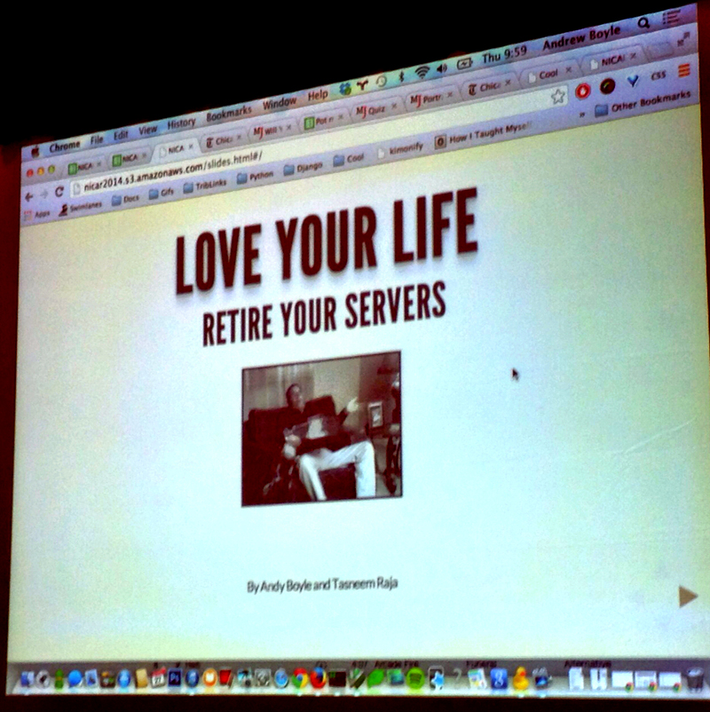
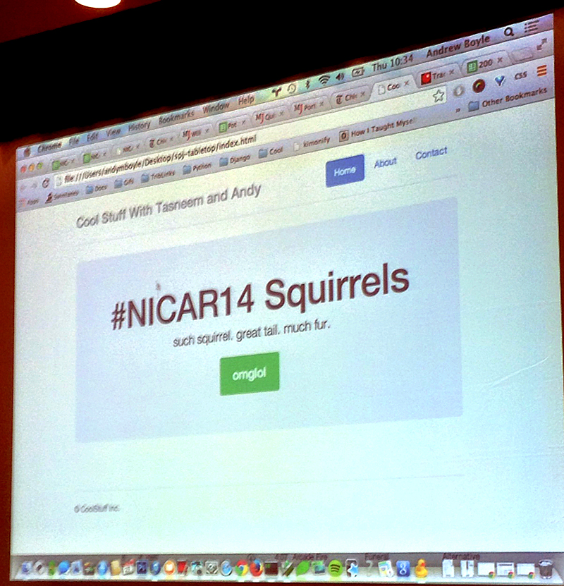

Check out Mother Jones’ GitHub news quiz
Tabletop.js turns Google Spreadsheets into structured HTML.
Boston.com elections: One awesome dude’s laptop.
Cheaper: Chicago Tribune’s 2012 election traffic cost (you know, the one where the president was from Chicago?) was ~$20.
Fast: How quickly do you need data online? Live link to the data, iframe a google spreadsheet, use Tarbell.
Non-techies in the newsroom can have control.
Check out Chicago Tribune’s Bootstrap Templates.
